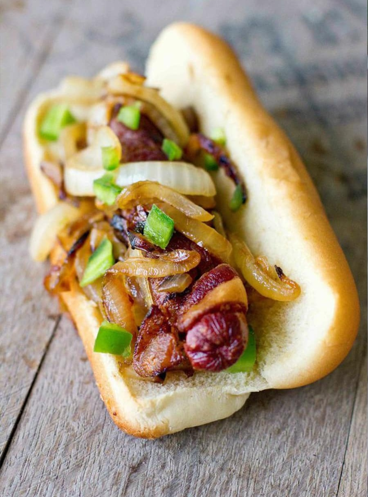

Bacon-Wrapped HotDogs

Entrée Breakdown
Bacon-Wrapped Hotdogs are a decadent and savory treat
featuring juicy hotdogs wrapped in crispy bacon, topped
with sweet caramelized onions, spicy grilled jalapeños,
and creamy, tangy cream cheese. This flavorful combination
makes for an irresistible and satisfying dish, perfect
for any barbecue or casual gathering.
Ingredients
- 8 hotdogs
- 8 slices of bacon
- 1 cup cream cheese, softened
- 1 large onion, thinly sliced
- 2-3 jalapeños, sliced
- 2 tablespoons vegetable oil
- Salt and pepper to taste
- 1 tablespoon sugar (for caramelizing onions)
Instructions
-
the Onions:
- Heat 2 tablespoons of vegetable oil in a skillet over medium heat. Add the thinly sliced onions and cook,
stirring occasionally, until they start to soften.
- Add 1 tablespoon of sugar to the onions. Continue cooking, stirring frequently, until the onions are golden
brown and caramelized, about 15-20 minutes. Season with salt and pepper to taste.
-
Prepare the Jalapeños:
- Slice the jalapeños and grill them until they are slightly charred and tender. Set aside.
-
Wrap and Cook the Hotdogs:
- Spread a thin layer of cream cheese on each hotdog. Wrap each hotdog with a slice of bacon, securing with
toothpicks if necessary.
- Grill or pan-fry the bacon-wrapped hotdogs over medium heat, turning occasionally, until the bacon is crispy
and the hotdogs are heated through.
-
Assemble and Serve:
- Place the cooked hotdogs on a serving platter. Top with caramelized onions and grilled jalapeños.
- Enjoy immediately while the bacon is crispy and the cream cheese is creamy.